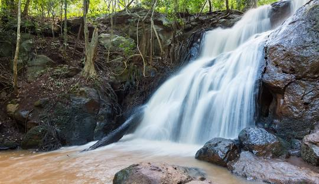
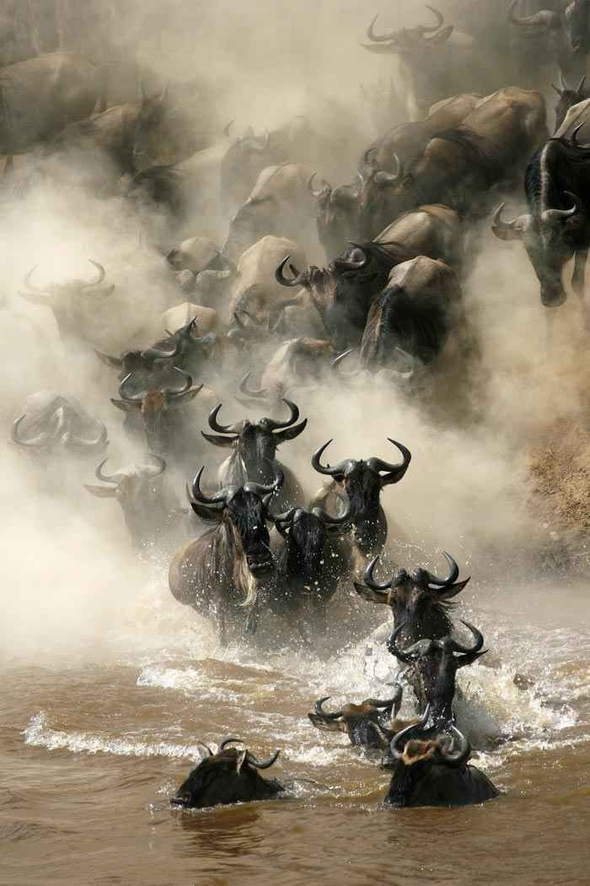
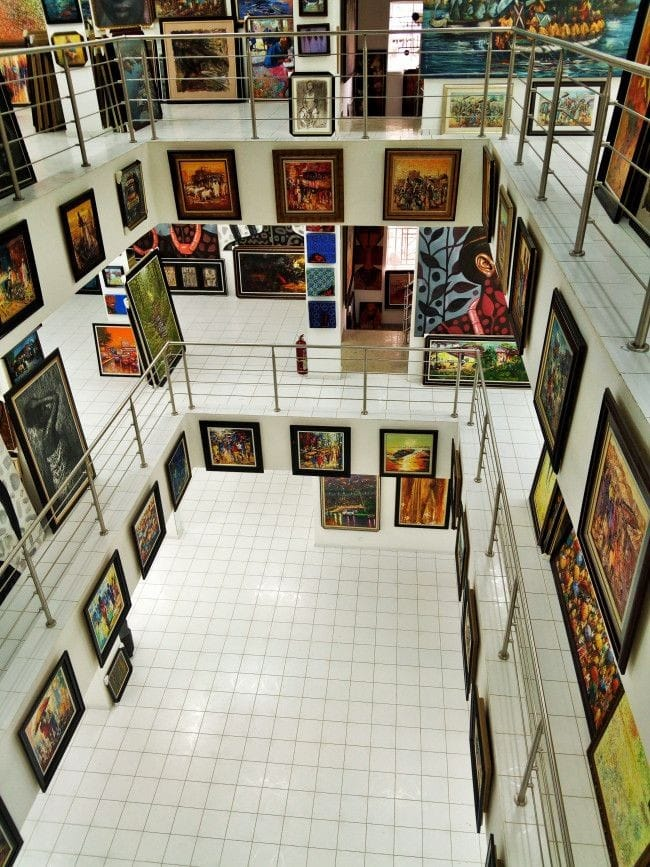

Local Attractions
Nairobi National Park

A beautiful park in the heart of the city. It is known for its diverse range of animals, and offers great place for safari experience, with well maintained roads and various viewpoints for wildlife viewing.
Mt. Kenya
A majestic UNESCO World Heritage Site and the second-highest peak in Africa, Mount Kenya offers breathtaking landscapes, including lush forests, alpine meadows, and glacial peaks. Renowned for its incredible biodiversity, the area is home to unique wildlife such as elephants, leopards, and rare bird species. A haven for adventurers, it provides opportunities for hiking, climbing, and exploring its pristine surroundings.
Karura
A serene urban oasis in Nairobi, Karura Forest is a haven for nature lovers and outdoor enthusiasts. Spanning over 1,000 hectares, it features scenic walking and cycling trails, picturesque waterfalls, and lush vegetation. Home to diverse wildlife, including monkeys, butterflies, and rare bird species, it offers a perfect escape for relaxation, picnics, and reconnecting with nature, just minutes from the bustling city.
Giraffe Centre

It offers unique experiencewhere visitors can feed and interact with endangered Rothschild's giraffes, creating unforgetable memories. Generally, it combines adventure with meaningful conservation messages, attracting many visitors.
Maasai Mara
A breathtaking wildlife haven in Kenya, reknown for its stunning landscapes, and incredible biodiversity. also, the great migration of the wild beests is witnessed here.
Nairobi Gallary
Art museum known for its historical significance as the "Point Zero", for Nairobi. It offers unique collection of artworks and artifacts that showcase the city's cultural heritage. Visitors can explore the rich history of Nairobi through various exhibitions and displays at this iconic gallery.

Popular Restaurants
Gourmet Bistro
Fine dining with a seasonal menu.
Pizza Palace
Best pizza in town with fresh ingredients.
Upcoming Events
Food Festival
Join us for a weekend of delicious food!
Concert in the Park
Enjoy live music under the stars.
Featured Local Guides
Traveler Testimonials
“The best experience ever! My guide took me off the beaten path and showed me hidden gems.”
- Alex, Canada“A truly immersive cultural experience. I felt like a local for the first time!”
- Priya, India